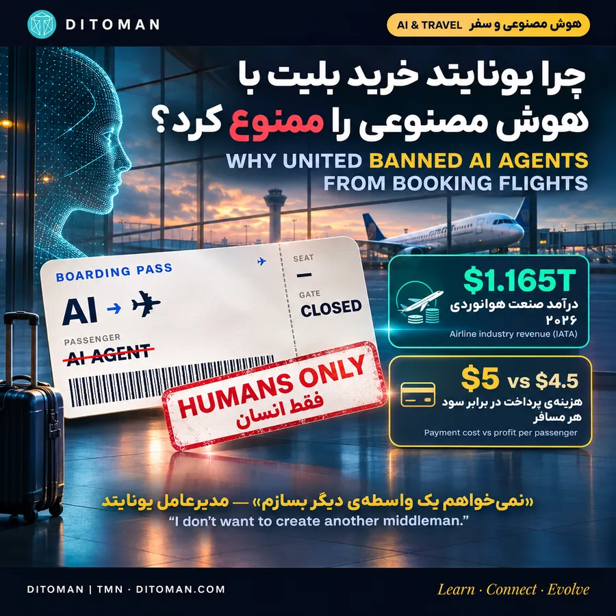
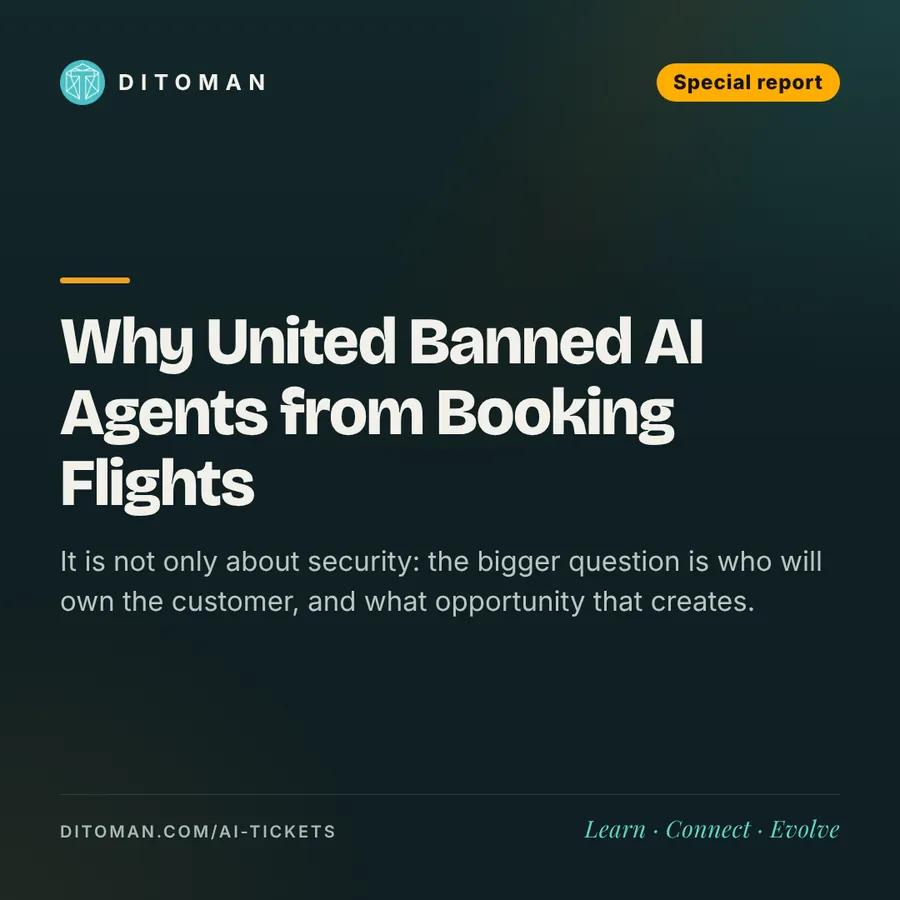

هوش مصنوعی پشت درِ فرودگاه ماند؛ چرا یونایتد خرید بلیت با هوش مصنوعی را ممنوع کرد؟
AI left at the gate: why United banned AI agents from booking flights
ماجرا فقط امنیت نیست؛ سؤال بزرگتر این است که در آینده چه کسی مشتری را در اختیار دارد، و این برای ایران چه فرصتی میسازد.
It is not only about security: the bigger question is who will own the customer, and what opportunity that creates.
۰۱. دقیقاً چه اتفاقی افتاد؟
یونایتد ایرلاینز، یکی از سه شرکت هواپیمایی بزرگ آمریکا، روز ۱۱ نوامبر ۲۰۲۶ «قرارداد حمل» خود را بهروز کرد.
- قانون تازه (بند 6.J.6): استفاده از عاملهای هوش مصنوعی برای خرید، تغییر یا مدیریت بلیت، و خرید هر خدمت دیگر، ممنوع است.
- دامنه: هم سایت و اپ یونایتد، هم عاملهایی که از طریق آژانسها و واسطهها به یونایتد وصل میشوند.
- حتی با نظارت انسان: طبق متن قرارداد، اینکه یک انسان کار عامل را تأیید کند، استثنا محسوب نمیشود.
- حق لغو: یونایتد حق لغو رزروهایی را که با عامل هوش مصنوعی انجام یا تغییر داده شدهاند، برای خودش محفوظ داشته (بند 5.H).
- چه چیزی هنوز مجاز است؟
هوش مصنوعی همچنان میتواند پروازها و قیمتهای یونایتد را پیدا کند و نشان دهد. فقط خرید نهایی باید با خود مسافر باشد.
عامل هوش مصنوعی چیست؟
نسل تازهای از دستیارها که فقط جواب نمیدهند، کار انجام میدهند. مثلاً میگویی: «برای هفتهی بعد یک پرواز ارزان از پورتو به نیویورک پیدا کن، با بار مجاز و توقف کوتاه.» عامل چند سایت را میگردد، مقایسه میکند و اگر دسترسی داشته باشد، حتی پرداخت را هم انجام میدهد.
۰۲. چرا یونایتد این تصمیم را گرفت؟
دلایل رسمی:
- امنیت اطلاعات: عامل ممکن است به رمز حساب باشگاه مشتریان (MileagePlus)، اطلاعات پرداخت و سوابق سفر دسترسی پیدا کند.
- خرید ناخواسته: عامل ممکن است بلیت اشتباه بخرد، رزرو را تغییر دهد یا مایلهای مسافر را خرج کند.
- قوانین هوانوردی: طبق مقررات ادارهی هوانوردی (FAA) و وزارت حملونقل آمریکا، بعضی تأییدها، مثل اینکه بار مسافر مواد خطرناک ندارد، باید از طرف خود مسافر باشد.
دلیل اقتصادی، از زبان خود مدیرعامل:
اسکات کربی، مدیرعامل یونایتد، در شیکاگو صریح گفت:
«راستش را بخواهید، نمیخواهم یک واسطهی دیگر بسازم.»
یعنی موضوع فقط امنیت نیست؛ رقابت بر سر رابطهی مستقیم با مشتری است.
نقد منتقدان:
بعضی کارشناسان صنعت، از جمله وبلاگ معتبر View from the Wing، میگویند استدلال ایمنی ضعیف است: قانون مواد خطرناک لازم نمیداند همهی مراحل رزرو دستی انجام شود. آنها حدس میزنند انگیزههای دیگری هم در کار است: قدرت چانهزنی سر کمیسیون، هزینهی جستوجوهای انبوه و اینکه ممنوع کردن، تا وقتی رزروهای عاملها هنوز کم است، ارزانتر است.
۰۳. چقدر پول در این بازار جابهجا میشود؟
- درآمد کل صنعت هوانوردی ۲۰۲۶: ۱٬۱۶۵ میلیارد دلار (پیشبینی یاتا، ژوئن ۲۰۲۶)
- سود خالص صنعت ۲۰۲۶: ۲۳ میلیارد دلار؛ حاشیهی سود فقط ۲٪
- سود خالص هر مسافر: ۴٫۵ دلار
- هزینهی پردازش پرداختها در ۲۰۲۵: ۲۴٫۵ میلیارد دلار روی ۱٬۰۵۰ میلیارد دلار فروش؛ یعنی حدود ۵ دلار برای هر مسافر
نکتهی جالب:
هزینهی پرداخت هر مسافر (۵ دلار در ۲۰۲۵) از سود پیشبینیشدهی هر مسافر (۴٫۵ دلار در ۲۰۲۶) بیشتر است. این دو عدد مربوط به دو سال متفاوتاند، اما نشان میدهند چرا هر هزینهی کوچک در زنجیرهی فروش بلیت برای ایرلاینها مهم است و چرا هیچکدام دلشان یک واسطهی تازه نمیخواهد.
۰۴. کمیسیونها: چه کسی پول میگیرد؟
- کارمزد کارت بانکی: بهطور میانگین ۲٫۵۳٪ مبلغ بلیت؛ میانگین همهی روشهای پرداخت ۱٫۹۷٪
- ارزانترین روشها: بعضی پرداختهای لحظهای فقط ۰٫۰۱٪ هزینه دارند
- کمیسیون عامل هوش مصنوعی: هنوز نرخ عمومی و تأییدشدهای وجود ندارد
یک مثال ساده:
روی یک بلیت ۵۰۰ دلاری، کارمزد کارت با نرخ میانگین حدود ۱۲٫۶ دلار میشود. اگر یک واسطهی تازه هم سهمی بخواهد، از سودی که فقط ۴٫۵ دلار است، چیزی باقی نمیماند.
یادمان باشد:
هیچ سند عمومی نشان نمیدهد یونایتد تا امروز پول قابل توجهی بابت عاملهای هوش مصنوعی پرداخته است. این تصمیم بیشتر پیشگیرانه است تا واکنشی.
۰۵. واقعیت امروز: این بازار هنوز کوچک است
- خود یونایتد میگوید حجم رزروهای عاملهای هوش مصنوعی فعلاً ناچیز است.
- اوبر اعلام کرد در هفتهی هالووین، از حدود ۳۲۰ میلیون سفر و سفارش، عاملهای هوش مصنوعی فقط ۴ سفر و ۵۰۰ سفارش غذا ثبت کردند.
یعنی جنگ امروز بر سر بازار امروز نیست؛ بر سر قواعد بازار فرداست. یونایتد میخواهد پیش از آنکه عاملها قدرتمند شوند، مرزها را مشخص کند.
۰۶. همه یک راه را نمیروند
- یونایتد: ممنوعیت خرید با عاملهای شخصی
- دلتا: طبق گزارشها، خرید با دستیارهای احرازهویتشده را با محافظهای اضافه (مثلاً برای سفر کودکان بدون همراه) مجاز میداند
- امریکن ایرلاینز: اجازهی خرید از طریق بعضی شرکای مشخص
- ساوتوست: افزونهی ChatGPT برای جستوجوی گفتوگومحور پرواز
- چاینا ایسترن (چین): در آوریل ۲۰۲۶ اولین شریک خارجی اپ Qwen علیبابا شد؛ جستوجو تا خرید و خدمات سفر در یک گفتوگو
- بیرون از هوانوردی: آمازون در نوامبر ۲۰۲۵ از Perplexity به خاطر خرید عامل مرورگرش در آمازون شکایت کرد و حکم موقت توقف آن را گرفت
نتیجه:
دو مدل در حال شکلگیری است. مدل دیوار: فقط انسان میخرد. مدل درِ کنترلشده: عامل با مجوز، احراز هویت و محدودیت میخرد. هنوز معلوم نیست کدام برنده میشود.
۰۷. دو نگاه به یک تصمیم
نگاه موافق:
امنیت مسافر، جلوگیری از خرید اشتباه، مسئولیت روشن و حفظ رابطهی مستقیم با مشتری. وقتی سود هر مسافر ۴٫۵ دلار است، هر واسطهی تازه میتواند کل سود را ببلعد.
نگاه مخالف:
مسافر حق دارد با هر ابزاری که میخواهد خرید کند. ممنوعیت، نوآوری را کند میکند و ممکن است در نهایت به ضرر خود ایرلاین تمام شود؛ اگر رقبایی مثل دلتا راحتتر با عاملها کار کنند، مشتری به سمت آنها میرود. اجرای فنی این ممنوعیت هم ساده نیست.
۰۸. این خبر برای ایران چه معنایی دارد؟
تأثیر مستقیم:
تقریباً هیچ. ایرلاینهای ایرانی به دلیل تحریمها به سیستمهای توزیع جهانی و اکوسیستم پرداخت بینالمللی وصل نیستند.
اما سه فرصت و یک چالش:
- فرصت برای مسافران: دستیارهای هوشمند میتوانند قیمت، قوانین استرداد، بار مجاز و مسیرها را از چند سایت یکجا مقایسه کنند.
- فرصت برای شرکتهای فناوری ایرانی: ساخت دستیارهای هوشمند فارسیزبان که با مجوز فروشندگان به اطلاعات معتبر و بهروز وصل شوند. بازاری که غولهای جهانی به آن نمیرسند.
- فرصت برای پلتفرمهای سفر داخلی: بهجای مقاومت، میتوانند زودتر از رقبا یک «درِ رسمی» (API) برای عاملهای هوشمند باز کنند و قواعد بازی را خودشان بنویسند.
- چالش برای آژانسها: اگر مشتری همهی انتخابهایش را از طریق هوش مصنوعی انجام دهد، هزینهی جذب مشتری، مدل کمیسیون و اهمیت برند آژانس تغییر میکند.
اینها سناریوهای تحلیلیاند، نه تغییراتی که در بازار ایران رخ داده باشد.
۰۹. چه باید کرد؟
برای شرکتها و پلتفرمها:
- اتصال رسمی (API): عامل فقط از مسیر تأییدشده به قیمت و ظرفیت دسترسی داشته باشد.
- مجوز محدود: عامل بتواند جستوجو کند، اما بدون تأیید جداگانهی کاربر پولی پرداخت نکند.
- سقف تراکنش: مبلغ، تعداد و نوع عملیات از قبل محدود باشد.
- ثبت همهچیز: هر جستوجو، تغییر و خرید قابل پیگیری باشد.
برای خود ما بهعنوان کاربر:
- رمز اصلی حسابها و اطلاعات کامل کارت را به ابزارهای ناشناس نده.
- هوش مصنوعی را برای جستوجو و مقایسه به کار بگیر، اما تصمیم و پرداخت نهایی را خودت انجام بده.
- جزئیات بلیت را پیش از پرداخت خودت چک کن.
نگاه دیتومان
تصمیم یونایتد پایان هوش مصنوعی در سفر نیست؛ شروع مرحلهی تازهای است که در آن قواعد رابطهی مسافر، فروشنده و عامل هوشمند نوشته میشود.
احتمالاً آینده چیزی بین این دو مدل خواهد بود: هوش مصنوعی بهترین گزینه را پیدا میکند، و انسان، با یک کلیک آگاهانه، خرید را تأیید میکند.
و برای ما، فرصت اصلی همینجاست: ساختن ابزارهای قابل اعتماد فارسیزبان که بهجای دور زدن سیستمها، با آنها همکاری کنند.
سؤال مهمتر:
وقتی هوش مصنوعی به نمایندگی از ما خرید میکند، اگر اشتباه کند، چه کسی مسئول است؟
بیشتر بخوانید
- اروپا به رفاه گرانقیمت عادت کرده؛ چه کسی هزینهاش را میپردازد؟
- صنعت تازه: ساختن هوش مصنوعی برای کسبوکارها
- تو عقب نیفتادهای؛ زمین مسابقه جلوتر دویده
منابع
آخرین بازبینی: ۲۲ آبان ۱۴۰۵. دیتومان یک رسانهی آموزشی است و این گزارش توصیهی سرمایهگذاری نیست.